TvHome — واجهة ذكية عربية لشاشتك
يستبدل الواجهة الرئيسية لشاشة Android TV بنظام متكامل: محتوى يتجدد، ومساعد صوتي اسمه «رفيق» يتحكم بالشاشة فعلاً، ومواقيت الصلاة مع الأذان والقفل، ووضع الجمعة، والمباريات المباشرة، وشاشة توقف بمواقيت الصلاة.
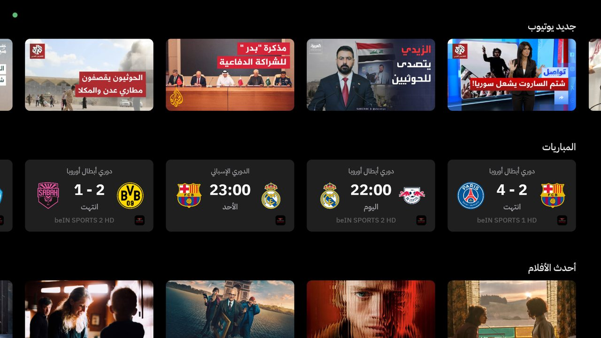
المزايا
كل صفحة في النظام، بلقطات من شاشة حقيقية. اضغط على أي صورة لتكبيرها.
الشاشة الرئيسية
قسم كبير بأحدث مقاطع قنواتك، وصفوف جديد يوتيوب والمباريات وتطبيقاتك.
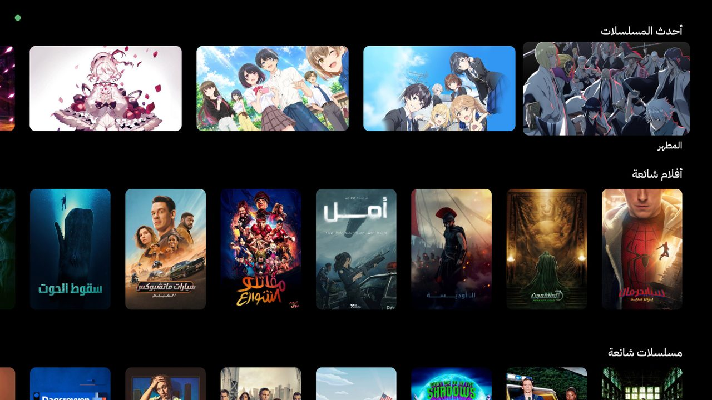
أحدث الأفلام والمسلسلات
تتجدد كل ١٥ دقيقة وعند الرجوع للرئيسية، وتظهر حلقات اليوم والأنمي أولاً مع «الموسم · الحلقة · اليوم».
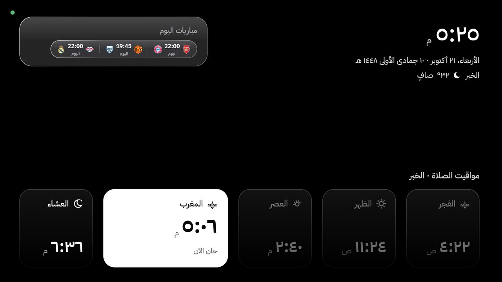
شاشة التوقف
الساعة والتاريخ الهجري والطقس ومباريات اليوم ومواقيت الصلاة، مع إبراز الصلاة القادمة.
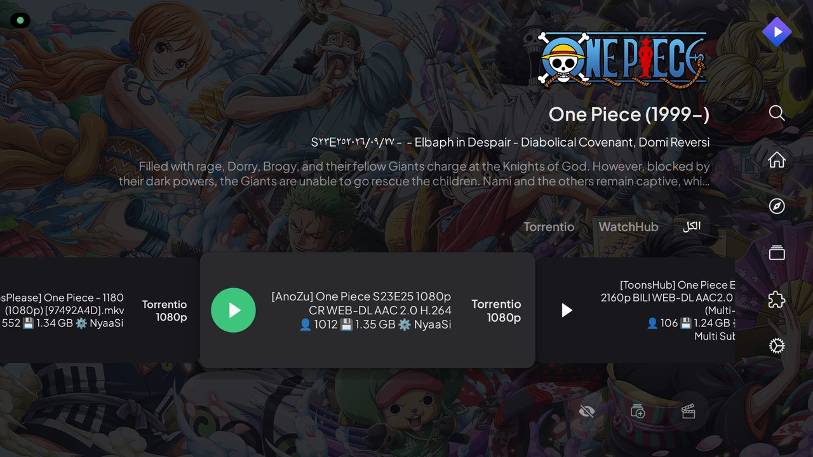
التشغيل في ستريميو
قل اسم أي عمل، ويفتح رفيق الحلقة أو الفيلم ويختار بث 1080p سليم ويبدأ التشغيل.
المساعد «رفيق»
اضغط زر المساعد أو المايك في الريموت وتكلم. جوجل يسمع وواجهته مخفية، ورفيق يرد باللهجة السعودية كتابة وصوتاً، ولا يذكر أي تفاصيل تقنية.
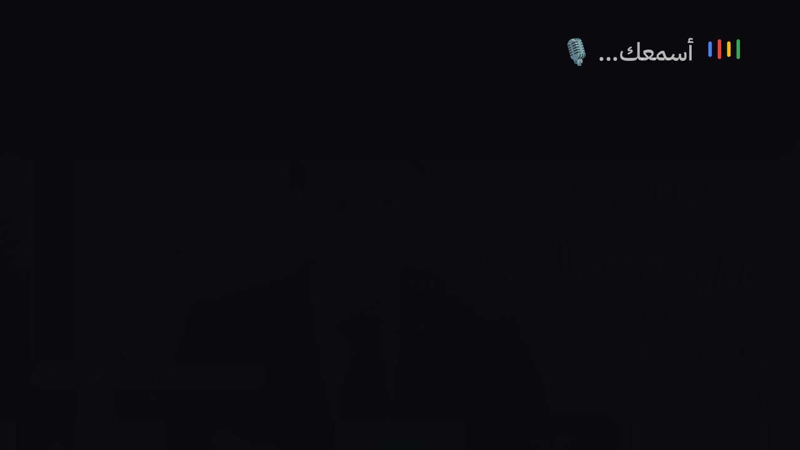
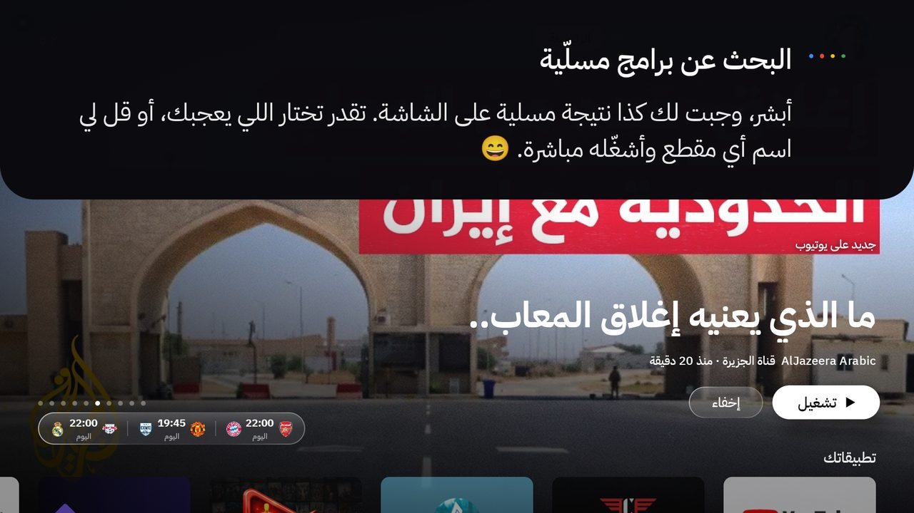

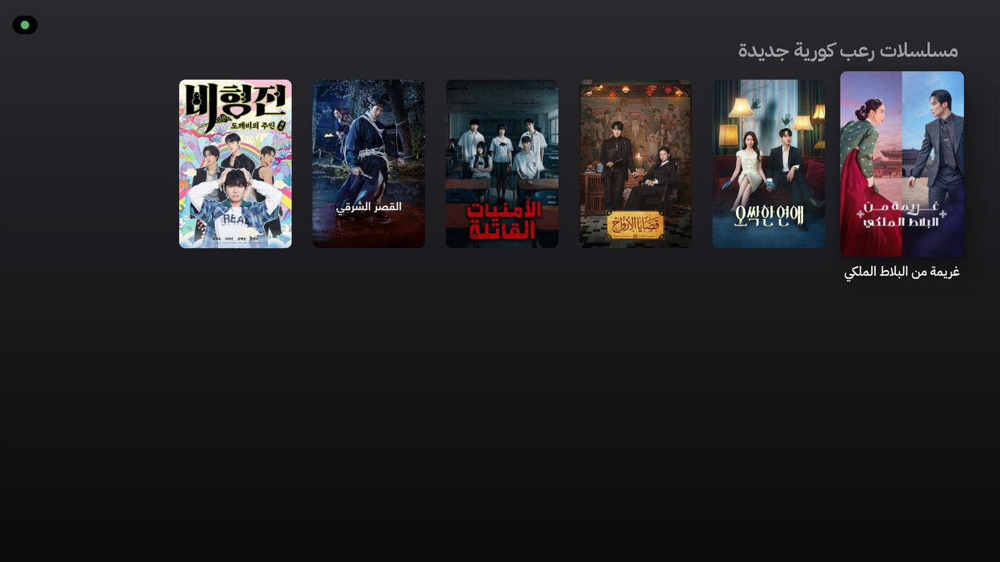
جرّب تقول
اقترح لي شييسألك سؤالاً واحداً: فيلم ولا مسلسل ولا أنمي؟ وأي جو؟ جديد ولا قديم؟
أنمي أكشن جديديعرض النتائج بوسترات، ثم «افتح الثاني» يفتح صفحته
شي يشبه Breaking Badأعمال مشابهة من المكتبة
شغّل آخر حلقة من ون بيس في ستريميوأي عمل، وأي موسم أو حلقة
افتح آخر حلقة أنا أقطع لمحمد عدنانأحدث حلقة نزلت من البرنامج في يوتيوب
شغّل الجزيرة مباشرالقنوات المباشرة في يوتيوب
شغّل سورة الكهف بصوت العفاسيمشغّل القرآن بملء الشاشة
شغّل مباراة برشلونةيفتح كاسبر فليكس على قناة المباراة
وش اللي على الشاشة؟يشوف الشاشة ويجاوب
علّي الصوت · وقّف · كم الساعةأوامر فورية بدون ذكاء اصطناعي (أقل من ثانية)
الفلتر يشتغل دائماً: لا يقترح رفيق محتوى فاضحاً أبداً. «عائلي» يعطيك أعمالاً تناسب الأطفال، و«بدون لقطات» يستبعد اللقطات الجنسية.
الصلاة والجمعة
مواقيت أم القرى، وصوت الأذان، وقفل الشاشة من الأذان حتى الإقامة، ووضع الجمعة مع سورة الكهف.

للخروج الطارئ: اضغط مطوّلاً على زر الرجوع ٥ ثوانٍ (يظهر الشريط بعد ثانيتين).
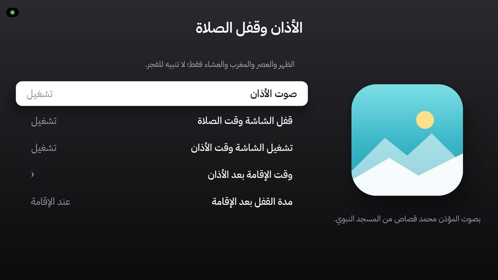
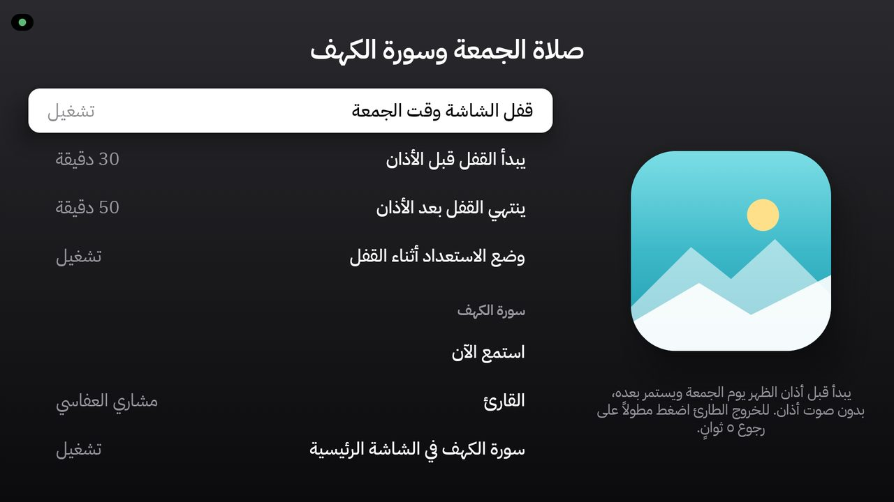
المباريات
مواعيد ونتائج مباشرة لأنديتك وبطولاتك، تتحدث كل ١٥ ثانية أثناء اللعب، مع تذكير قبل المباراة وزر «شاهد في كاسبر فليكس».
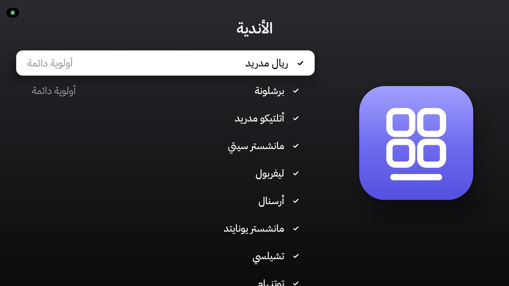
الإعدادات
كل شيء يُضبط من الريموت: الشاشة الرئيسية، شاشة التوقف، الأذان، الجمعة، الإشعارات، المساعد وفحص الميزات.
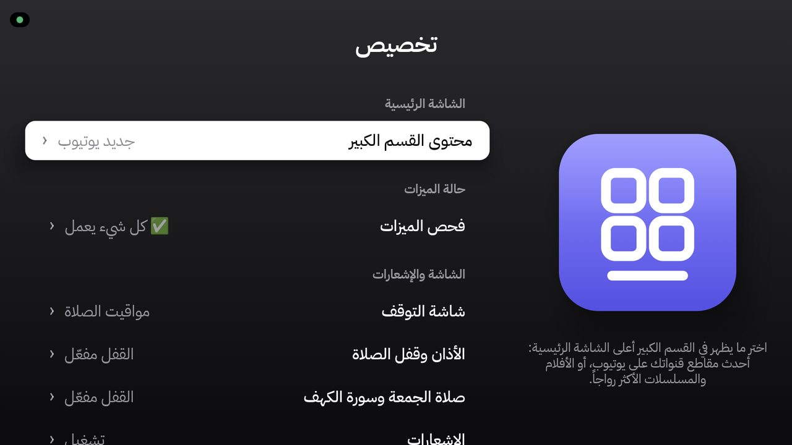
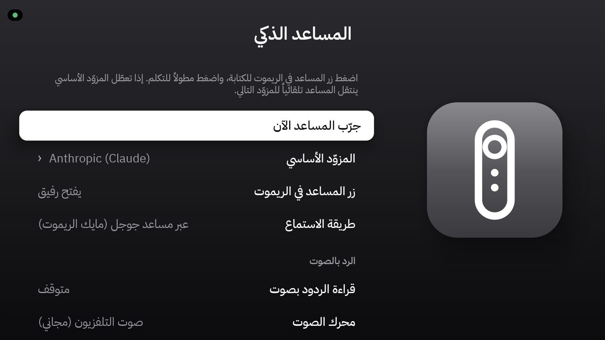
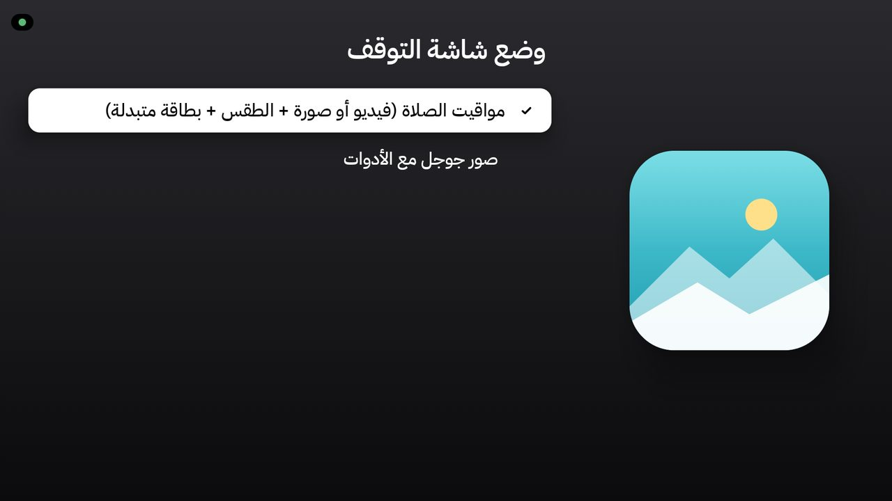
التثبيت
أسهل طريقة: افتح المجلد في وكيل برمجة ذكي (Claude Code أو Cursor أو Codex) وقل له «اتبع install.md». هو يسألك وش تحتاج ويسوي كل الخطوات معك. أو اتبع الخطوات التالية:
جهّز الكمبيوتر
ثبّت JDK 21 و Android SDK (المنصة 36) و adb. وجهّز رمز TMDB المجاني ومفتاح مساعد واحد على الأقل (Anthropic أو Experiential Labs أو Gemini).
cp local.properties.example local.properties
# عبّي: sdk.dir و TMDB_READ_TOKEN و ANTHROPIC_API_KEY (أو غيره)فعّل وضع المطوّر في الشاشة
الإعدادات ← النظام ← حول ← اضغط «Build» سبع مرات. ثم خيارات المطوّر ← فعّل «تصحيح USB» (و«التصحيح عبر الشبكة» إن وُجد). وخذ عنوان IP الشاشة من إعدادات الشبكة.
ابنِ التطبيق
نسخة release دائماً لأنها الأسرع على الشاشة.
./gradlew :app:testReleaseUnitTest :app:assembleRelease
# إذا الكمبيوتر مشغول:
nice -n 19 ./gradlew --no-daemon --max-workers=1 :app:assembleReleaseثبّته على الشاشة
وافق على رسالة «السماح بالتصحيح» في الشاشة واختر «السماح دائماً».
adb connect 192.168.1.50:5555
adb install -r app/build/outputs/apk/release/app-release.apk
TV=192.168.1.50:5555 ./scripts/after-install.shاجعله الواجهة الرئيسية
يعطّل الواجهة الأصلية تعطيلاً قابلاً للإرجاع، ويضبط شاشة التوقف.
TV=192.168.1.50:5555 ./scripts/set-home.shإضافات اختيارية
قنوات يوتيوب لصف «جديد يوتيوب» (معرّف قناة أو @معرّف في كل سطر، أو ملف subscriptions.csv)، وضبط الساعة بعد انقطاع الكهرباء.
adb push youtube_channels.txt /sdcard/Android/data/com.moath.tvhome/files/
adb shell settings put global ntp_server 162.159.200.123خصّص من الريموت
من الإعدادات ← تخصيص: الأذان والقفل، الجمعة وسورة الكهف، الأندية والبطولات، المساعد، وشاشة التوقف.
لا يُعطَّل أي تطبيق في الشاشة بدون موافقتك، وبأمر pm disable-user فقط (قابل للإرجاع)، وكل تطبيق معطّل يُسجّل في scripts/disabled-packages.txt. للرجوع لكل شيء:
TV=192.168.1.50:5555 ./scripts/restore.sh # أضف --uninstall لحذف TvHomeالريموت
| الزر | الوظيفة |
|---|---|
| المساعد / المايك | رفيق يسمع (عبر جوجل) ويرد |
| Home (ضغط مطوّل) | مركز التحكم: الساعة، النوم، شاشة التوقف، الشبكة، البلوتوث، الصوت |
| Home (ضغطتين) | مبدّل التطبيقات |
| رجوع (٥ ثوانٍ) في قفل الصلاة | خروج طارئ |
| OK على شاشة التوقف | إغلاقها |
حل المشاكل
| المشكلة | الحل |
|---|---|
| مركز التحكم أو رفيق ما يستجيب بعد التحديث | شغّل scripts/after-install.sh مرة ثانية (شاشات TCL تحتاج السماح بالتشغيل التلقائي). |
No route to host والشاشة شغالة | adb kill-server && adb start-server && adb connect <ip>:5555 |
| رفيق يقول يحتاج مفتاح | أضف المفتاح في local.properties وأعد البناء. |
| ستريميو يعلق على شعار التحميل | يحدث عند التشغيل الأول؛ النظام يعيد فتح الحلقة تلقائياً بعد ١٤ ثانية. تأكد أن إضافاتك مثبّتة في ستريميو. |
| بطاقة الصلاة مخفية | الساعة غير مضبوطة — اضبط NTP كما في الخطوات. |